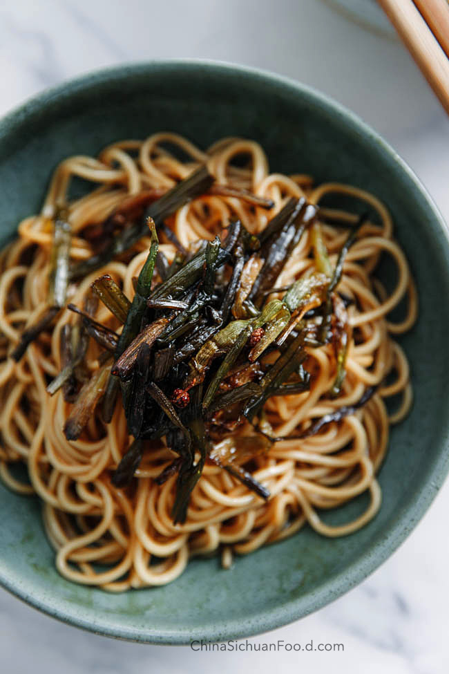

Lasagna

Description
Scallion oil noodles is one of my most favorite food to make at home. It is easy and quick to make and full of flavors.
Ingredients
- 1/3 cup oil
- 8 ounces scallions (washed, pat thoroughly dry, and julienned)
- 3 tablespoons dark soy sauce
- 3 tablespoons light soy sauce
- 4 teaspoons sugar
- 1 pound Chinese white noodles ( cooked until al dente)
- if you want to add the pork component, you'll also need 1 cup (150g) ground pork,
3 more tablespoons oil (45 ml), and an extra 1/2 cup (50g) of chopped scallion
Steps
- Heat oil in your wok over medium heat, add the scallions, and let them fry slowly.
Once they start to turn golden brown, remove the scallions from the oil and set aside.
- To the oil, add both kinds of soy sauce and the sugar.
Use low heat and cook the mixture for about two minutes, until it starts to bubble up.
- If you want to add pork to your noodles, simply brown the ground pork over high heat with about 3 tablespoons oil.
Stir in 1/2 cup chopped scallions, and season with a bit of salt.
- This recipe serves six. Portion out the noodles into bowls, and start with a tablespoon of sauce (it really doesn't take much!).
You can keep adding a bit more until the saltiness is to your liking.
If using the pork, add a spoonful of your crispy pork and scallion mixture to the top, along with a small handful of the reserved fried scallions.
- Toss it all together and dig in.